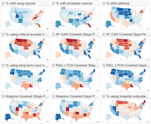
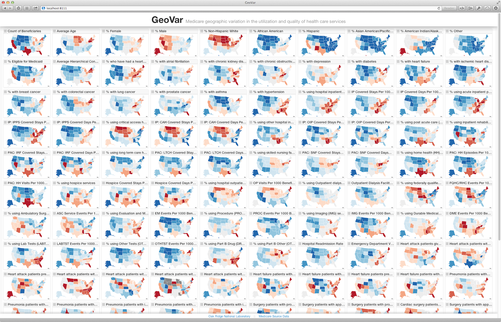

Situation Awareness and Visual Analytics
Oak Ridge National Laboratory
Cyberspace Sciences and Information Intelligence Research Group
John Goodall
Team Lead, Situation Awareness and Visual Analytics team
865-446-0611 / jgoodall@ornl.gov

Agenda
- Background
- Situation Awareness
- Situation Awareness Projects
- Attack discovery: situ
- Contextual understanding: stucco
- Visual Analytics
- Visual Analytics Projects
- Health Care: geovar, link
- Cyber Security: nv
Background
- Education
- BA in History, Binghamton University
- PhD in Information Systems, UMBC
Defending the Network: Visualizing Network Packets for Intrusion Detection Analysis
- Professional
- Systems Administrator, UMBC
- Research Scientist, Secure Decisions
- Research Scientist/Team Lead, ORNL
- Service
- VizSec, Organizing Committee, 2007 - 2013
- IEEE InfoVis, PC, 2011 - 2013
- ACM CHIMIT, PC, 2008 - 2009
Research Background
- Visual analytics
- Information visualization
- Human-computer interaction
- Computer network defense
- Computer-supported cooperative work
- Qualitative research methods
SAVA Team Research Areas
- Mathematics
- Probabilistic modeling
- Graph modeling & algorithms
- Theorems
- Human-Computer Interaction
- Information visualization
- Use-centered design
- Domain and user modeling
- User testing / experimentation
- Machine Learning
- Unsupervised learning
- Active learning
- Online learning
- Computing Platforms
- Streaming platforms & algorithms
- Distributed storage & algorithms
- Mobile computing
What is Situation Awareness?

Situation Awareness
The continuous extraction of environmental information along with integration of this information with previous knowledge to form a coherent mental picture, and the end use of that mental picture in directing further perception and anticipating future need.
- Dominguez, et al, 1994
Situation Awareness
Knowing what is going on so you can figure out what to do.
- Adam, 1983
SA for Cyber Security
- Design for scale - even on small networks, huge volumes of data from many different kinds of sensors
- Process in real-time - an intruder can be there and gone by the time an attack is discovered
- Integrate domain knowledge - analysts are extremely knowledgeable in their domain and in their environment
- Provide context - analysts require contextual understanding of an event to make decisions
situ
A Scalable Framework for Timely Discovery and Situational Understanding of Cyber Attacks
situ :: motivation
$114 Billion: Annual financial cost of cybercrime $278 Billion: Additional cost of lost time
- Symantec Study, 2011
Sophisticated attack groups have established a presence in the networks of many organizations
situ :: problem
- Discovering novel and sophisticated cyber attacks and providing situation awareness are ongoing problems in computer network defense
- Cyber defense analysts maintain continually evolving mental models that allow them to differentiate between malicious and benign traffic, but current systems do not exploit this knowledge
- Current attack discovery systems typically focus on a single type of data, even though some sophisticated attacks can only be identified from looking at multiple data sets
situ :: problem
Current systems focus technologies at identifying attacks, but provide little in the way of helping analysts make rapid decisions
situ :: approach
- Anomaly detection - unsupervised, probabilistic modeling of data for different contexts allows the system to model behavior at multiple scales
- Event classification - supervised machine learning algorithms allow users to incorporate their own domain knowledge into the system
- Information visualization - real-time event visualization provides an understanding of why events are anomalous and malicious to furnish users with the information to make decisions
- Feedback loop - a context-aware learning feedback loop helps to provide labeled data to algorithms while minimizing the burden on users

Stucco
Situation and Threat Understanding by Correlating Contextual Observations
stucco :: problem
- To make decisions about security events, analysts require context
- Trigger events (e.g. IDS alerts) rarely include the much needed context
- Analysts must manually locate, collect and synthesize relevant data from a variety of sources to construct a contextual understanding of an event
stucco :: overview
Stucco will collect data sources not typically integrated into security systems and extract relevant data into a knowledge graph to accelerate situational understanding
stucco :: philosophy
- Users need information to gain situational understanding – not more data
- Our focus is not simply collecting more data and indexing or clustering documents
- Our focus is to organize domain concepts that match the way analysts think and facilitate understanding
- Users need a place to store and retrieve their knowledge
- Our focus is not just on retrieval, but on providing a space to collaborate on incidents
- Our focus is on creating a knowledge graph that includes both domain and situated knowledge
stucco :: ontology

stucco :: architecture
What is Visual Analytics?
Information Visualization
The purpose of visualization is insight, not pictures
- Ben Schneiderman, 1999
Visual Analytics is not...
- Static explanatory infographics
- Scientific visualization
- Geographic information systems (kind of)
Visual Analytics
- Focused on sensemaking and analytical reasoning
- Concerned with abstract data
- Focused on collaboration
- Desiged by multidisciplinary teams
- Focused on exploration instead of explanation
Visual Analytics
Visualization + Computation
Health Care Projects
GeoVar
Geographic Variation

geovar :: problem
- CMS created public health indicator data sets at the different geographic levels for public use, but the files are just data tables which are not easily digested by non-experts
- Need an easily understandable visualization to show variations and changes over time and locale for many different health indicators
geovar :: approach
- Small multiples of many indicators to compare geographic variations among indicators
- Drill in on details to see how an indicator changes over time and location

Link
Schema matching across data sources
link :: problem
- Schema matching - identifying related objects for joining disparate data sets - is often required to gain insight into complex phenomenon
- Schema matching is a difficult, typically manual, process that requires domain expertise and time to comb through data and meta-data
link :: approach
- Probabilistic modeling of the values of each field to identify possible matches for each pair of fields
- Visualization to let the user correct or add links to each field
- Export mappings as RDF to enable joining data sets into single graph
Cyber Security Projects
nv
Nessus Vulnerability Visualization
nv :: problem
- Vulnerability assessment tools can expose weak points within a computing network
- These tools can produce very large data sets in medium/large networks
- It can be difficult to get the big picture of the security posture of your network from current user interfaces for vulnerability assessment tools
- It is impossible to compare scans to determine the differences between them - has the network become more vulnerable or more secure?
- Users' domain knowledge is not taken into account
nv :: approach
- Web-based, zoomable treemap of host vulnerabilities for entire network
- Visualize a single vulnerability scan shows the state of the network
- Compare two vulnerability scans shows fixed, new, and open issues
- Re-orderable data hierarchy (group, IP, port, issue)
- View issues by severity, criticality or count
- Filter interactively by severity, issue type, top issues
- User defined groupings of assets and tagging of high-value assets
Common themes
- Visualization is required to make information understandable
- Visualization on the web is now possible - still have to make it scale
- Visualization is most powerful when combined with computation
- Users have lots of domain knowledge - capture and make use of it
- 'Big data' is about more than volume - speed is especially important in cyber security
Situation Awareness and Visual Analytics
Oak Ridge National Laboratory
Cyberspace Sciences and Information Intelligence Research Group
John Goodall
Team Lead, Situation Awareness and Visual Analytics team
865-446-0611 / jgoodall@ornl.gov